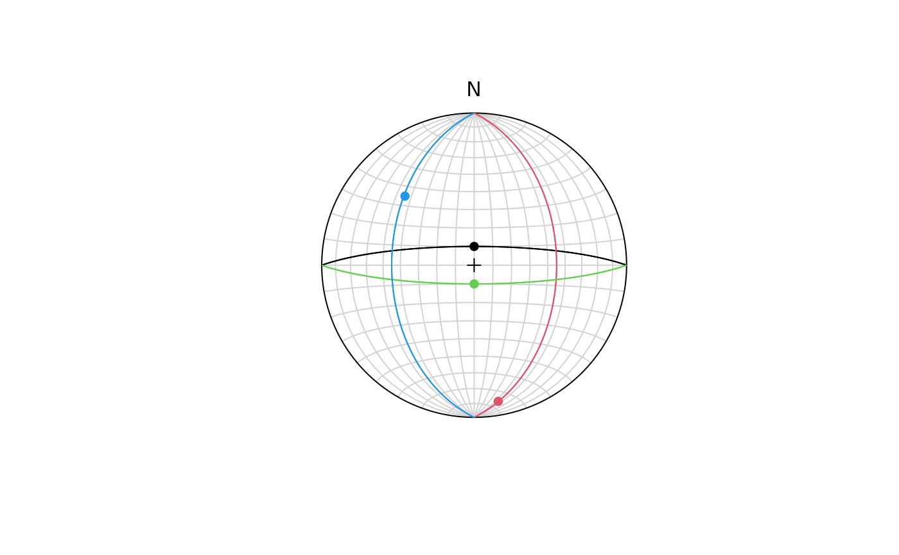

Visualization of pairs (planes and lines) in a stereographic projection.
Usage
stereo_pair(
x,
pch = 16,
col = 1,
lwd = 1,
lty = 1,
lab = NULL,
cex = 1,
greatcircles = TRUE,
upper.hem = FALSE,
earea = TRUE
)Arguments
- x
Object of class
"Fault"- pch, col, lwd, lty
plotting parameters for planes and lines
- lab
character. text labels
- cex
character expansion of labels
- greatcircles
logical. Whether greatcircles are displayed (
TRUE, the default) or poles to planes (FALSE)- upper.hem
logical. Whether the projection is shown for upper hemisphere (
TRUE) or lower hemisphere (FALSE, the default).- earea
logical
TRUEfor Lambert equal-area projection (also "Schmidt net"; the default), orFALSEfor meridional stereographic projection (also "Wulff net" or "Stereonet").
Examples
faults <- Fault(
c(0, 90, 180, 270),
c(80, 45, 80, 45),
c(0, 170, 180, 315),
c(80, 10, 80, 36),
c(1, -1, 0, 1)
)
# stereoplot()
# stereo_fault(faults, col = 1:4)
# stereo_fault(faults, col =1:4, hoeppner = TRUE)
# legend("bottomright", c("normal", "thrust", "unknown", "normal"), fill = 1:4)
stereoplot()
stereo_pair(faults, col = 1:4)
